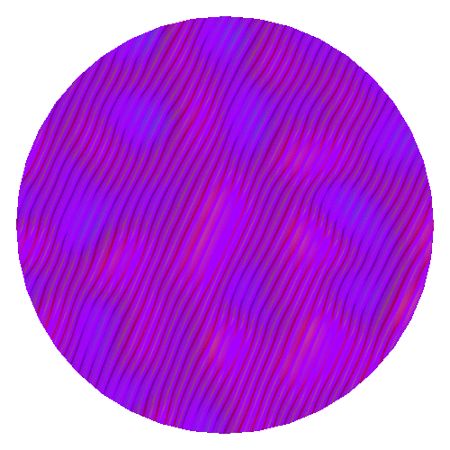
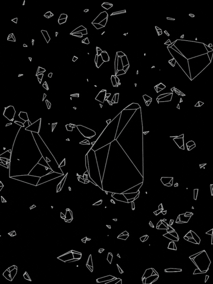

Broken world
Camellia, genus of evergreen shrubs or small trees in the Camellia family. Leaves thickly leathery, elliptic, apex slightly acute, base broadly cuneate, margin serrate; Petals are bowl-shaped; The fruit is spherical in shape. Camellia has no obvious dormant period throughout the year, and the flowering period is longer, from October to May of the next year, and the full flowering period is in January to March. Camellia, because its leaves like tea, so named camellia, Ming Dynasty Li Shizhen also said its leaf tea, and can be used as tea drink, so tea name